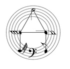

Author: Robert L. Rucinski
In this puzzle, you are presented with staves of circular music filled with differently pitched notes of different note lengths. There are 7 treble clef staves and 7 bass clef staves.
To solve the puzzle, overlap all of the treble clef staves into one treble clef stave. Do the same for with the bass clef staves. Connect notes (ala connect-the-dots style) of the same note letter (A, B, etc.) in any octave, within each staff, in order from whole note → half note → etc. → 128th note. Each note letter (A) will spell out a clue letter. Read the letters around the circle starting with the clef sign at the bottom. The treble clef gives EEGLLN and the bass clef gives AABKLN★.
Then, arrange the clue letters for each clef in note letter order (A through G) to get the clue phrase: LENGLE BLANK A ★.
The final answer is TROUBLING, as it completes the title of Madeleine L'Engle's novel Troubling a Star.
NOTE: Letters are separated out for clarity. Because of overlap in notes, some original notes are obscured or the stems reversed. This does not affect the solution.
| (A notes = L) | (B notes = E) | (C notes = N) | (D notes = G) | (E notes = L) | (F notes = E) |
|  | |||||
| (A notes = B) | (B notes = L) | (C notes = A) | (D notes = N) | (E notes = K) | (F notes = A) |
| (G notes = ★) |